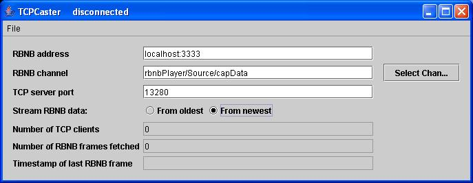
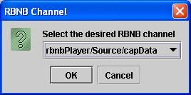

Introduction
Overview
Setup and StartupMenu Bar
File
User Interface Fields
RBNB address
RBNB channel
Select Chan...
TCP server port
Stream RBNB data
Number of RBNB frames fetched
Timestamp of last RBNB frame

| Option | Description |
| -a <DataTurbine host:port> |
Specifies DataTurbine to which to connect; defaults to "localhost:3333". |
| -c <DataTurbine channel> |
Specifies the DataTurbine channel to which to subscribe; no
default value. |
| -h |
Print a help message
displaying
the command-line options. |
| -s <server socket port> |
Port on which to listen for client connections; defaults to
13280. |
| Open | The following actions are performed: 1. Open a TCP server socket at the port specified in the TCP server port field; be ready to accept TCP client connections. 2. Open a connection to the DataTurbine at the address specified in the RBNB address field. 3. Fetch data from the channel specified in the RBNB channel field. Fetch either From oldest or From newest as specified by the Stream RBNB data radio button selection. 4. Send each fetched data block as a TCP packet to each connected client application. |
| Close | The following actions are performed: 1. Close the TCP server socket. 2. Stop fetching data from the DataTurbine. 3. Close the connection to the DataTurbine. |
| Exit | Close the TCP server socket and DataTurbine connections and exit program. |
